Procesamiento del Lenguaje Natural y Reconocimiento del Habla · Clase 05
1.2. Redes Convolucionales - V2
Contenido convertido sin ejecutar Python. Se conservan las salidas guardadas; las figuras matemáticas sustituidas y los gráficos de PE están identificados en el registro de revisión.
Las redes convolucionales (o CNN, por Convolutional Neural Networks) son un tipo especial de red neuronal diseñada para procesar imágenes y videos.
Su diferencia principal con las redes neuronales tradicionales es que utilizan una operación llamada convolución, la cual permite extraer automáticamente características importantes de las imágenes (bordes, texturas, formas, etc.)
24.1.1. Componentes Básicos
En las siguientes secciones se describen brevemente los componentes básicos de una red convolucional.
24.1.1.1. Filtros o Kernels
Cada canal de salida tiene pesos entrenables que combinan regiones locales de los canales de entrada. Los patrones resultantes dependen del entrenamiento; no hay una correspondencia obligatoria «un filtro, un concepto». En PyTorch Conv2d aplica correlación cruzada, sin invertir espacialmente el kernel.
El resultado de aplicar un filtro a una imagen se llama mapa de características. Cada mapa muestra dónde y cuán fuerte aparece una característica específica (como una rueda, una cara, o una línea, etc.).
Cuando se usan varios filtros, cada uno genera su propio mapa, y todos juntos forman un tensor tridimensional que describe la imagen desde distintos aspectos (en el caso en el que se esté trabajando con 3 dimensiones).
24.1.1.3. Padding
El padding agrega valores en los bordes. Puede elegirse para conservar la resolución con ciertas combinaciones de kernel, stride y dilatación; no conserva el tamaño automáticamente ni tiene que ser siempre cero o simétrico.
Max pooling selecciona máximos por ventana. Con stride 2 suele reducir la resolución; con stride 1 y padding adecuado puede mantenerla. La operación descarta información y no garantiza conservar todas las características relevantes.
El shape describe el tamaño de cada eje. torch.nn.Conv2d recibe normalmente [N,C,H,W]: lote, canales, altura y ancho. [N,H,W,C] es otra convención; requiere reordenar ejes para usar esta interfaz.
Convolución: combina regiones locales con pesos compartidos. Padding: agrega bordes. Stride: determina la separación entre aplicaciones. Pooling: resume ventanas sin pesos entrenables. Shape: identifica los ejes y tamaños. Ninguna de estas operaciones garantiza por sí sola conservar significado o mejorar la precisión.
En secciones anteriores vimos que una red nueronal (MLP simple) tiene la siguiente estructura:
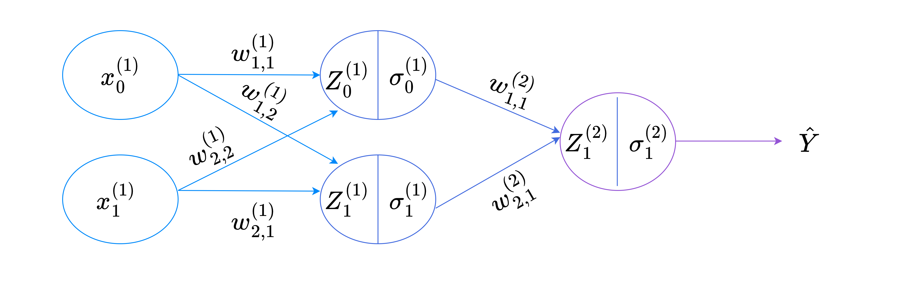
Luego, a diferencia de un MLP, una red convolucional tiene la siguiente estructura:
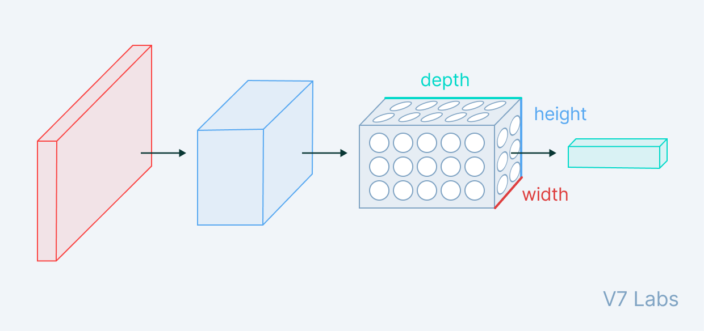
24.3. Componentes de las Redes Convolucionales
24.3.1. Capa de Entrada
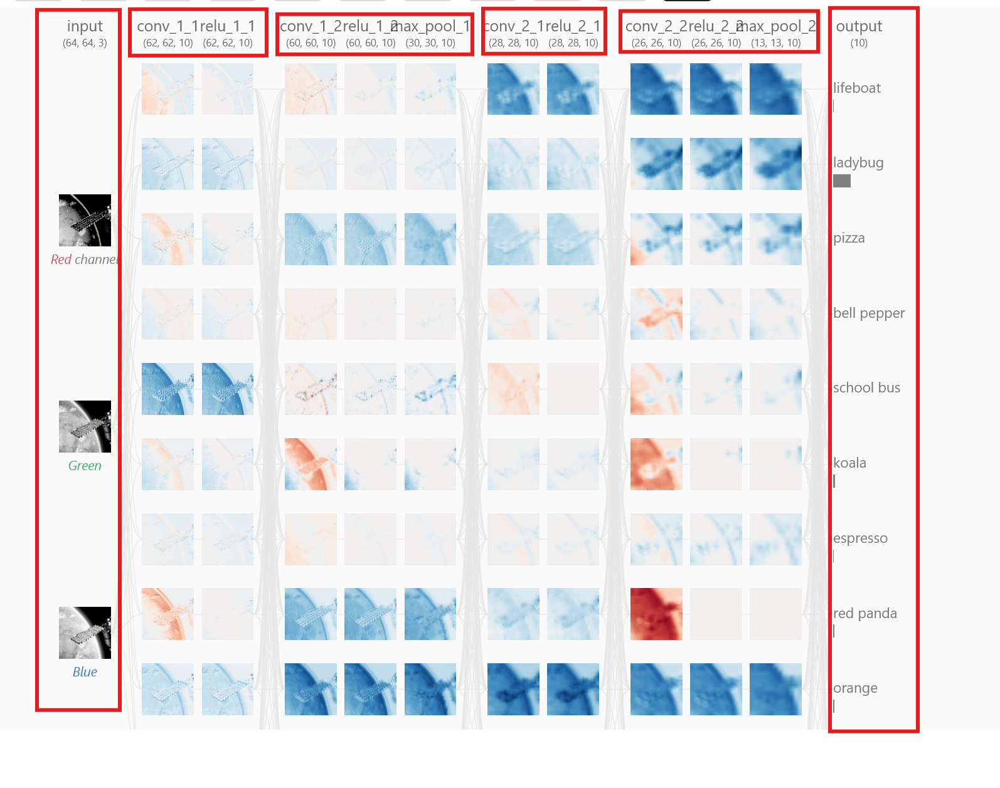
La capa de entrada (la capa más a la izquierda en la imagen de arriba) representa la imagen de entrada en la CNN. Dado que utilizamos imágenes RGB como entrada, la capa de entrada tiene tres canales, correspondientes a los canales rojo, verde y azul, respectivamente, que se muestran en esta capa.
En este caso, la imagen que se está analizando es:
24.3.2. Capa Convolucional
24.3.2.1. Ejemplo Práctico: Como funciona una capa de convolución
Supongamos que la entrada de nuestra red es una imagen de píxeles con 3 canales de color (RGB). Esto equivale a valores de píxiles.
24.3.2.2. El filtro: una "linterna" que recorre la imagen
Podemos imageinar una capa de convolución como si tuvieramos una linerna que ilumina pequeñas zonas de la imagen.
Luego, supongamos que esa "linterna" (kernel) cubre un área de píxeles.
La linterna se moverá por toda la imagen, iluminando una región diferente en cada paso.
En términos de aprendizaje automático:
Esa lintera se llama filtro (también conocido como kernel o núcleo).
El área que ilumni se llama campo receptivo.
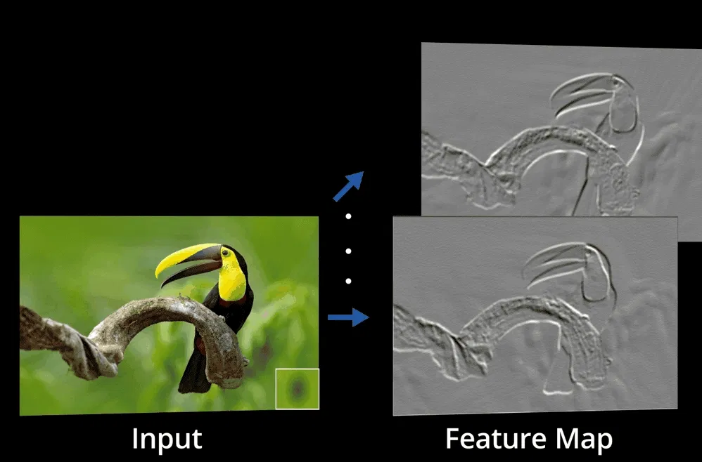
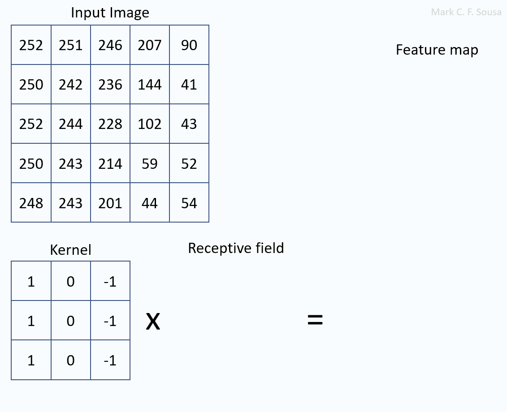
Luego, mediante la herramienta cnn-explainer, podemos ver, como por cada canal RGB se aplica un filtro de que aprende diferentes patrones por canal.
24.3.2.3. Capa Convolucional con un Solo Filtro
Para un mayor entendimiento, veamos un ejemplo más detallado. Supongamos que la imagen de entrada tiene un tamaño de . El tamaño espacial de un filtro es una elección de diseño, pero tiene que tener una profundiad de tres para coincidir con la profundidad de la imagen de entrada. En este caso, supongamos que usamos un único filtro de tamaño .
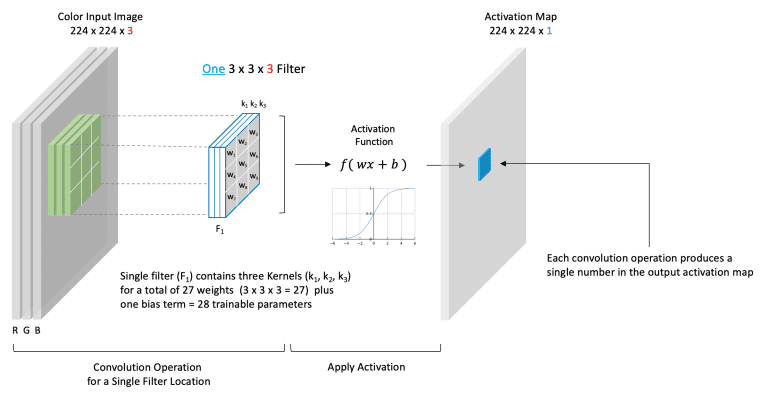
Con 3 canales de entrada y groups=1, un filtro de 3×3 tiene 27 pesos y un sesgo opcional. Una capa con 32 filtros tiene 32 canales de salida; 32 no es la resolución espacial. Para una entrada [N,3,32,32], 32 filtros de 5×5, stride 1 y padding 0 producen [N,32,28,28], con parámetros si hay sesgo.
Con padding p por lado, dilatación d, kernel k y stride s, el tamaño de salida en un eje es
Ejemplos: (n,k,p,s,d)=(5,3,0,2,1) da 2; (5,3,2,2,1) da 4; (64,3,0,1,1) da 62. Dos convoluciones 3×3 sin padding llevan 64→62→60; un max pooling 2×2 con stride 2 lleva 60→30. Una entrada de 32 canales necesita filtros de 32 canales cuando groups=1.
24.3.2.5. Aprendizaje de Filtros Para Detectar Estructuras
Podemos pensar en cada filtro como una fuente que alberga nuevo conocimiento de algo especial y único sobre los datos de entrada. Estos pesos (números) se aprenden durante el proceso de entrenamiento. Los canales individuales en los mapas de activación en cualquier punto de la red representan características extraídas de la imagen de entrada (tensor de entrada, ya que no necesariamente tiene que ser una imagen)
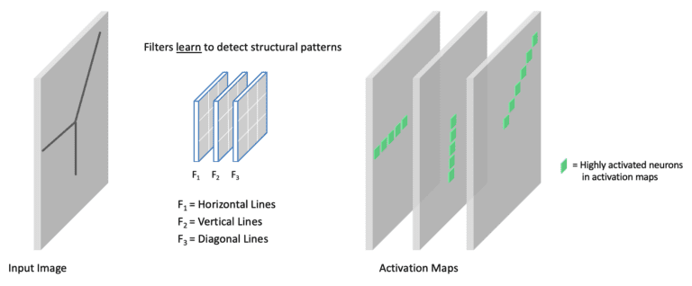
En la imagen de arriba, tenemos una capa convolucional con tres filtros. Cada filtro aprende a detectar diferentes elementos estructurales (es decir, líneas horizontales, líneas verticales y líneas diagonales). Para ser más precisos, estas "líneas" representan estructuras de bordes en una imagen. En los mapas de activación de salida, enfatizamos las neuronas altamente activadas asociadas con cada filtro.
24.3.3. Capa ReLU
ReLU aplica a cada elemento y aporta no linealidad. Una composición de transformaciones afines sin operaciones no lineales sigue siendo afín. Max pooling también es no lineal; por eso no basta con quitar ReLU para afirmar que cualquier CNN completa se reduce a una única convolución.
Esta función de activación se aplica elemento por elemnto a cada valor del tensor de entrada.
Por ejemplo, si se aplica al valor , el resultado sería , ya que es mayor que .
La función se realiza después de cada capa convolucional en la arquitectura de red descrita anteriormente.
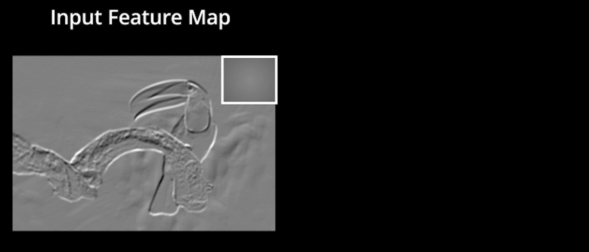
Código Python · celda 47
Video("./datos",embed=True)
Output hidden; open in https://colab.research.google.com to view.
24.3.4. Capa de Max Pooling
La reducción espacial mediante pooling produce menos activaciones. Puede aumentar la tolerancia local a desplazamientos, pero descarta detalle y puede perjudicar tareas que requieren localización precisa.
El pooling con reducción espacial disminuye el número de activaciones y el coste de las capas posteriores. Max pooling no tiene parámetros entrenables; tampoco cambia por sí solo el número de pesos de una convolución posterior con igual número de canales y tamaño de kernel. Sí puede reducir los de una capa densa que recibe el mapa aplanado.
Seleccionar máximos puede dar tolerancia local a pequeños desplazamientos, con pérdida de detalle. Reducir resolución no garantiza eliminar información irrelevante ni evitar el sobreajuste.
El Pooling es una técnica utilizada en redes convolucionales para reducir el tamaño de los mapas de activación.
Lo hace aplicando un filtro deslizante 2D (sliding filter) sobre la salida de las capas convolucionales.
Este filtrose mueve a través de la imagen o mapa de activación y resume la información más importante de cada región que cubre.
24.3.4.1. El Parámetro Stride
El desplazamiento del filtro está controlado por un parámetro llamado stride (paso).
El stride indica cuántos píxeles se mueve el filtro cada vez que se aplica.
Por ejemplo:
Si stride = 1, el filtro se mueve un píxel a la vez (salida más detallada).
Si stride = 2, el filtro se mueve de dos en dos (salida más pequeña).
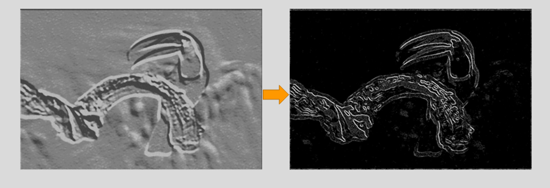
24.3.4.2. Tipos de Pooling
Existen dos operaciones principales de pooling:
Tipo
Operación
Descripción
Max Pooling
max()
Toma el valor máximo de la región analizada. Es el método más común, ya que conserva la característica más destacada.
Average Pooling
avg()
Calcula el promedio de los valores dentro de la región. Suaviza las activaciones.
La operación Max-Pooling requiere seleccionar un tamaño de kernel y una longitud de paso durante el diseño de la arquitectura (stride). Una vez seleccionados, la operación desliza el núcleo según el stride sobre la entrada, seleccionando solo el valor más grande en cada segmento del kernel de la entrada para otener un valor para la salida.
Código Python · celda 56
Video("./datos",embed=True)
Output hidden; open in https://colab.research.google.com to view.
Luego, la capa de pooling se aplica a cada mapa de activación rectificado (después de pasar por la capa ).
Para comprender cómo se estructura una red convolucional profunda, podemos partir de un ejemplo simplificado. Supongamos que tenemos un bloque convolucional básico, compuesto únicamente por una capa convolucional seguida de una capa de max pooling.
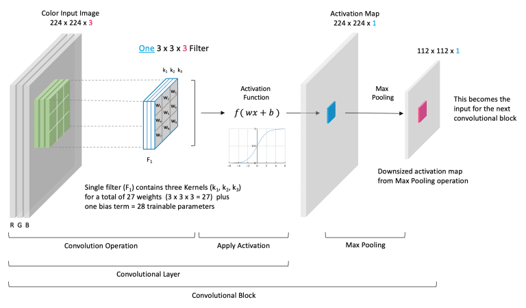
En este caso, la entrada a la capa convolucional es una imagen en color, representada por tres canales (RGB). Cada canal (rojo, verde y azul) proporciona información complementaria de la misma escena, de modo que la red aprende a combinar dichas características espaciales y cromáticas en un mismo espacio de representación tridimensional.
24.3.6. Capa Flatten y Softmax
Flatten reorganiza ejes; no añade una capa densa ni parámetros. Para [N,2,5,5], flatten(start_dim=1) produce [N,50]. Una capa lineal posterior genera logits. Softmax puede aplicarse sobre cualquier eje elegido, no exige entradas unidimensionales y no requiere Flatten por sí misma.
Output hidden; open in https://colab.research.google.com to view.
Una operación tiene una función clave: garantizar que la suma de las salidas de la CNN sea (ya que se están sumando probabilidades).
Después de pasar por la función , cada clase corresponde ahora a una probabilidad adecuada.
Recordar que la función softmax está definida como:
23.3.7. Entendiendo los Hiperpármatros
23.3.7.1. Kernel Size
Un kernel pequeño combina vecindades menores por capa; apilar capas amplía el campo receptivo. La información y el rendimiento que se obtienen no dependen solo del tamaño del kernel.
Output hidden; open in https://colab.research.google.com to view.
Un kernel mayor abarca una región mayor por aplicación y suele tener más parámetros con los mismos canales. No extrae necesariamente menos información ni entrena peor. La reducción espacial depende también del padding, stride y dilatación.
Output hidden; open in https://colab.research.google.com to view.
24.3.7.2. Padding
El padding controla el tratamiento de los bordes y la forma de salida. Agregar ceros no reconstruye información externa ni garantiza una mejora de precisión. Con kernel impar, dilatación 1 y stride 1, p=(k−1)/2 por lado conserva el tamaño.
Output hidden; open in https://colab.research.google.com to view.
24.3.7.3. Stride
El stride es la separación entre aplicaciones del kernel. Aumentarlo suele reducir posiciones de salida y cómputo; también puede descartar detalle y producir aliasing. Un stride pequeño no garantiza aprender más características útiles.
Output hidden; open in https://colab.research.google.com to view.
23.3.8. Clasificador VGG-16
Las capas densas producen puntuaciones o logits. En clasificación de una sola etiqueta, softmax puede convertirlos en probabilidades. Con una entrada de 224×224 y la configuración VGG-16 usual, el extractor termina en 512×7×7; una entrada distinta puede producir otra forma.
Antes de que los datos de la última capa convolucional en el extractor de características puedan fluir a través del clasificador, deben aplanarse a un vector unidimensional de longitud 25088 . Después de aplanarlos, esta capa unidimensional se conecta completamente a la capa FC-6.
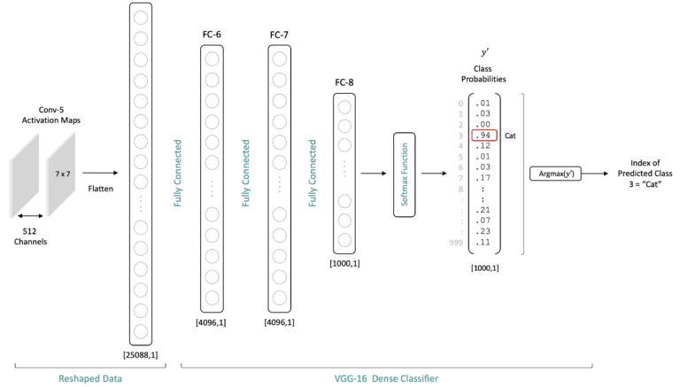
23.3.8.1. Capa de Normalización por Lote (Batch Normalization - Batch Norm)
Su objetivo principal es normalizar las activaciones intermedias (no sólo los datos de entrada) para mejorar la estabilidad numérica, acelerar la convergencia y reducir la sensibilidad del modelo a la inicialización de los pesos.
El internal covariate shift fue una motivación histórica de BatchNorm. No debe presentarse su eliminación como explicación definitiva de su eficacia. Santurkar et al. estudiaron cómo la normalización modifica y suaviza la optimización.
En la práctica puede mejorar la estabilidad y permitir tasas de aprendizaje distintas, pero sus efectos dependen de la arquitectura, el lote y la tarea. No elimina automáticamente los gradientes explosivos o desvanecientes.
Para un canal c, M=NHW, la media es y la varianza es . Se normaliza con y se aplica . No se vuelve a elevar la varianza al cuadrado. Por epsilon, la varianza normalizada no es exactamente uno. PyTorch usa estimador sesgado en el forward y no sesgado para actualizar la varianza acumulada.
En este bloque se usa el orden Conv → BatchNorm → ReLU. BatchNorm y ReLU son capas distintas; otras arquitecturas eligen otros órdenes.
ReLU tiene derivada 1 para entradas positivas y 0 para negativas. No evita todos los problemas del gradiente: puede producir unidades inactivas, y BatchNorm no garantiza impedirlo.
Con model.eval() y track_running_stats=True, BatchNorm utiliza la media y la varianza acumuladas durante entrenamiento. Así la normalización de una muestra no depende de las otras muestras del lote de evaluación.
Si track_running_stats=False, se utilizan estadísticas del lote también en evaluación. Cambiar de distribución de datos puede afectar al resultado en ambos casos; las estadísticas acumuladas no garantizan buena generalización.
24.4. Implementación de una CNN reducida inspirada en VGG
El laboratorio usa seis convoluciones y dos capas densas. Se inspira en bloques de VGG, pero no reproduce VGG-16. Sus formas y el número de clases corresponden a la configuración didáctica de entrada 32×32.
El ejemplo tiene tres canales de entrada, espacio 5×5 y un filtro con tres planos 3×3. En cada ubicación se suman los productos sobre espacio y canales.
Con stride uno, dilatación uno y sin padding, el resultado espacial es 3×3. Un filtro completo produce un canal de salida; dos filtros producirían dos canales.
El diagrama omite el eje del batch. Los pesos se comparten entre posiciones; el número de canales no se obtiene sumando la altura y el ancho ni corresponde necesariamente a colores después de la entrada.
classCNNModel(nn.Module):""" CNNModel: Implementación de una red neuronal convolucional profunda inspirada en la arquitectura VGG, diseñada para clasificación de imágenes de entrada 3x32x32 (por ejemplo, CIFAR-10). Estructura general: ------------------- - Bloque 1: 2x Conv2D(3→32) + ReLU + MaxPooling(2×2) - Bloque 2: 2x Conv2D(32→64) + ReLU + MaxPooling(2×2) - Bloque 3: 2x Conv2D(64→64) + ReLU + MaxPooling(2×2) - Flatten + 2 capas lineales (512 unidades ocultas → 10 clases) Parámetros: ----------- input_shape : tuple, opcional Forma del tensor de entrada. Por defecto (3, 32, 32). Ejemplo de uso: --------------- >>> model = CNNModel() >>> x = torch.randn(8, 3, 32, 32) >>> y = model(x) >>> print(y.shape) torch.Size([8, 10]) """def__init__(self,input_shape=(3,32,32)):super(CNNModel,self).__init__()# Bloque convolucional 1# Dos convoluciones consecutivas con 32 filtros y activación ReLU.# Se aplica MaxPooling para reducir las dimensiones espaciales a la mitad.self.conv1=nn.Sequential(nn.Conv2d(in_channels=3,out_channels=32,kernel_size=3,padding=1),# → (32, 32, 32)nn.ReLU(inplace=True),nn.Conv2d(in_channels=32,out_channels=32,kernel_size=3,padding=1),# → (32, 32, 32)nn.ReLU(inplace=True),nn.MaxPool2d(kernel_size=2,stride=2),# → (32, 16, 16))
24.4.2. Bloque Convolucional 2 - "Conv Block 2"
Objetivo: capturar características más abstractas, combinando bordes y texturas.
Configuración:
2 capas convolucionales con 64 filtros cada una.
Misma configuración de kernel (, padding ).
en cada convolución.
MaxPooling () para reducir dimensiones de → .
Salida del bloque:(batch_size, 64, 8, 8)
Código Python · celda 93
def__init__(self,input_shape=(3,32,32)):super(CNNModel,self).__init__()# Bloque convolucional 1# Dos convoluciones consecutivas con 32 filtros y activación ReLU.# Se aplica MaxPooling para reducir las dimensiones espaciales a la mitad.self.conv1=nn.Sequential(nn.Conv2d(in_channels=3,out_channels=32,kernel_size=3,padding=1),# → (32, 32, 32)nn.ReLU(inplace=True),nn.Conv2d(in_channels=32,out_channels=32,kernel_size=3,padding=1),# → (32, 32, 32)nn.ReLU(inplace=True),nn.MaxPool2d(kernel_size=2,stride=2),# → (32, 16, 16))# Bloque convolucional 2# Incrementa el número de canales a 64, preservando estructura espacial.self.conv2=nn.Sequential(nn.Conv2d(in_channels=32,out_channels=64,kernel_size=3,padding=1),# → (64, 16, 16)nn.ReLU(inplace=True),nn.Conv2d(in_channels=64,out_channels=64,kernel_size=3,padding=1),# → (64, 16, 16)nn.ReLU(inplace=True),nn.MaxPool2d(kernel_size=2,stride=2),# → (64, 8, 8))
24.4.3. Bloque Convolucional 3 - "Conv Block 3"
Objetivo: extraer patrones complejos y semánticos (formas, regiones de textura).
Configuración:
2 capas convolucionales con 64 filtros.
MaxPooling (2×2) para reducir 8×8 → 4×4.
Salida del bloque:(batch_size, 64, 4, 4)
Código Python · celda 95
def__init__(self,input_shape=(3,32,32)):super(CNNModel,self).__init__()# Bloque convolucional 1# Dos convoluciones consecutivas con 32 filtros y activación ReLU.# Se aplica MaxPooling para reducir las dimensiones espaciales a la mitad.self.conv1=nn.Sequential(nn.Conv2d(in_channels=3,out_channels=32,kernel_size=3,padding=1),# → (32, 32, 32)nn.ReLU(inplace=True),nn.Conv2d(in_channels=32,out_channels=32,kernel_size=3,padding=1),# → (32, 32, 32)nn.ReLU(inplace=True),nn.MaxPool2d(kernel_size=2,stride=2),# → (32, 16, 16))# Bloque convolucional 2# Incrementa el número de canales a 64, preservando estructura espacial.self.conv2=nn.Sequential(nn.Conv2d(in_channels=32,out_channels=64,kernel_size=3,padding=1),# → (64, 16, 16)nn.ReLU(inplace=True),nn.Conv2d(in_channels=64,out_channels=64,kernel_size=3,padding=1),# → (64, 16, 16)nn.ReLU(inplace=True),nn.MaxPool2d(kernel_size=2,stride=2),# → (64, 8, 8))# Bloque convolucional 3# Mantiene 64 canales pero profundiza la abstracción de características.self.conv3=nn.Sequential(nn.Conv2d(in_channels=64,out_channels=64,kernel_size=3,padding=1),# → (64, 8, 8)nn.ReLU(inplace=True),nn.Conv2d(in_channels=64,out_channels=64,kernel_size=3,padding=1),# → (64, 8, 8)nn.ReLU(inplace=True),nn.MaxPool2d(kernel_size=2,stride=2),# → (64, 4, 4))
24.4.4. Capa de aplanamiento (Flatten)
Convierte el tensor de salida tridimensional (64×4×4) en un vector unidimensional de 1024 unidades por imagen, para alimentar las capas densas (fully connected).
Código Python · celda 97
def__init__(self,input_shape=(3,32,32)):super(CNNModel,self).__init__()# Bloque convolucional 1# Dos convoluciones consecutivas con 32 filtros y activación ReLU.# Se aplica MaxPooling para reducir las dimensiones espaciales a la mitad.self.conv1=nn.Sequential(nn.Conv2d(in_channels=3,out_channels=32,kernel_size=3,padding=1),# → (32, 32, 32)nn.ReLU(inplace=True),nn.Conv2d(in_channels=32,out_channels=32,kernel_size=3,padding=1),# → (32, 32, 32)nn.ReLU(inplace=True),nn.MaxPool2d(kernel_size=2,stride=2),# → (32, 16, 16))# Bloque convolucional 2# Incrementa el número de canales a 64, preservando estructura espacial.self.conv2=nn.Sequential(nn.Conv2d(in_channels=32,out_channels=64,kernel_size=3,padding=1),# → (64, 16, 16)nn.ReLU(inplace=True),nn.Conv2d(in_channels=64,out_channels=64,kernel_size=3,padding=1),# → (64, 16, 16)nn.ReLU(inplace=True),nn.MaxPool2d(kernel_size=2,stride=2),# → (64, 8, 8))# Bloque convolucional 3# Mantiene 64 canales pero profundiza la abstracción de características.self.conv3=nn.Sequential(nn.Conv2d(in_channels=64,out_channels=64,kernel_size=3,padding=1),# → (64, 8, 8)nn.ReLU(inplace=True),nn.Conv2d(in_channels=64,out_channels=64,kernel_size=3,padding=1),# → (64, 8, 8)nn.ReLU(inplace=True),nn.MaxPool2d(kernel_size=2,stride=2),# → (64, 4, 4))# Aplanamiento de características convolucionalesself.flatten=nn.Flatten()# Convierte (64, 4, 4) → 1024
24.4.5. Capa Densa (FC1)
Entrada: 1024 unidades.
Salida: 512 neuronas con activación .
Actúa como un extractor de características de alto nivel.
Código Python · celda 99
def__init__(self,input_shape=(3,32,32)):super(CNNModel,self).__init__()# Bloque convolucional 1# Dos convoluciones consecutivas con 32 filtros y activación ReLU.# Se aplica MaxPooling para reducir las dimensiones espaciales a la mitad.self.conv1=nn.Sequential(nn.Conv2d(in_channels=3,out_channels=32,kernel_size=3,padding=1),# → (32, 32, 32)nn.ReLU(inplace=True),nn.Conv2d(in_channels=32,out_channels=32,kernel_size=3,padding=1),# → (32, 32, 32)nn.ReLU(inplace=True),nn.MaxPool2d(kernel_size=2,stride=2),# → (32, 16, 16))# Bloque convolucional 2# Incrementa el número de canales a 64, preservando estructura espacial.self.conv2=nn.Sequential(nn.Conv2d(in_channels=32,out_channels=64,kernel_size=3,padding=1),# → (64, 16, 16)nn.ReLU(inplace=True),nn.Conv2d(in_channels=64,out_channels=64,kernel_size=3,padding=1),# → (64, 16, 16)nn.ReLU(inplace=True),nn.MaxPool2d(kernel_size=2,stride=2),# → (64, 8, 8))# Bloque convolucional 3# Mantiene 64 canales pero profundiza la abstracción de características.self.conv3=nn.Sequential(nn.Conv2d(in_channels=64,out_channels=64,kernel_size=3,padding=1),# → (64, 8, 8)nn.ReLU(inplace=True),nn.Conv2d(in_channels=64,out_channels=64,kernel_size=3,padding=1),# → (64, 8, 8)nn.ReLU(inplace=True),nn.MaxPool2d(kernel_size=2,stride=2),# → (64, 4, 4))# Aplanamiento de características convolucionalesself.flatten=nn.Flatten()# Convierte (64, 4, 4) → 1024# Capas totalmente conectadasself.fc1=nn.Linear(64*4*4,512)# Primera capa densa
24.4.6. Capa Densa (FC2)
FC2 transforma 512 características en 10 logits. El código entrenado con CrossEntropyLoss devuelve esos logits sin softmax. Para mostrar probabilidades en inferencia se puede aplicar softmax(logits, dim=1); no se añade antes de esa pérdida.
def__init__(self,input_shape=(3,32,32)):super(CNNModel,self).__init__()# Bloque convolucional 1# Dos convoluciones consecutivas con 32 filtros y activación ReLU.# Se aplica MaxPooling para reducir las dimensiones espaciales a la mitad.self.conv1=nn.Sequential(nn.Conv2d(in_channels=3,out_channels=32,kernel_size=3,padding=1),# → (32, 32, 32)nn.ReLU(inplace=True),nn.Conv2d(in_channels=32,out_channels=32,kernel_size=3,padding=1),# → (32, 32, 32)nn.ReLU(inplace=True),nn.MaxPool2d(kernel_size=2,stride=2),# → (32, 16, 16))# Bloque convolucional 2# Incrementa el número de canales a 64, preservando estructura espacial.self.conv2=nn.Sequential(nn.Conv2d(in_channels=32,out_channels=64,kernel_size=3,padding=1),# → (64, 16, 16)nn.ReLU(inplace=True),nn.Conv2d(in_channels=64,out_channels=64,kernel_size=3,padding=1),# → (64, 16, 16)nn.ReLU(inplace=True),nn.MaxPool2d(kernel_size=2,stride=2),# → (64, 8, 8))# Bloque convolucional 3# Mantiene 64 canales pero profundiza la abstracción de características.self.conv3=nn.Sequential(nn.Conv2d(in_channels=64,out_channels=64,kernel_size=3,padding=1),# → (64, 8, 8)nn.ReLU(inplace=True),nn.Conv2d(in_channels=64,out_channels=64,kernel_size=3,padding=1),# → (64, 8, 8)nn.ReLU(inplace=True),nn.MaxPool2d(kernel_size=2,stride=2),# → (64, 4, 4))# Aplanamiento de características convolucionalesself.flatten=nn.Flatten()# Convierte (64, 4, 4) → 1024# Capas totalmente conectadasself.fc1=nn.Linear(64*4*4,512)# Primera capa densaself.fc2=nn.Linear(512,10)# Capa de salida (10 clases)
24.4.7. Flujo Completo de Datos
Convoluciones 3×3, stride 1 y padding 1 conservan H y W. Los tres bloques producen [N,32,16,16], [N,64,8,8] y [N,64,4,4]. Flatten conserva el batch y produce [N,1024]; las capas lineales llevan 1024→512→10 logits. Es una CNN reducida inspirada en bloques VGG, no la VGG-16 original de 13 convoluciones y 3 capas densas.
# Descargar el conjunto de datos CIFAR-10train_set=datasets.CIFAR10(root='./data',train=True,download=True,transform=transforms.ToTensor())test_set=datasets.CIFAR10(root='./data',train=False,download=True,transform=transforms.ToTensor())# Definir los cargadores de datostrain_loader=torch.utils.data.DataLoader(train_set,batch_size=32,shuffle=True)test_loader=torch.utils.data.DataLoader(test_set,batch_size=32,shuffle=False)
# Entrenamiento de la red neuronalforepochinrange(10):running_loss=0.0fori,datainenumerate(train_loader,0):inputs,labels=dataoptimizer.zero_grad()outputs=model(inputs)loss=criterion(outputs,labels)loss.backward()optimizer.step()running_loss+=loss.item()ifi%100==99:print('[%d, %5d] loss: %.3f'%(epoch+1,i+1,running_loss/100))running_loss=0.0